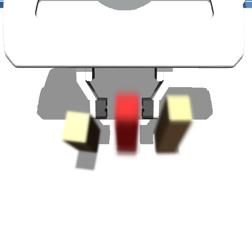
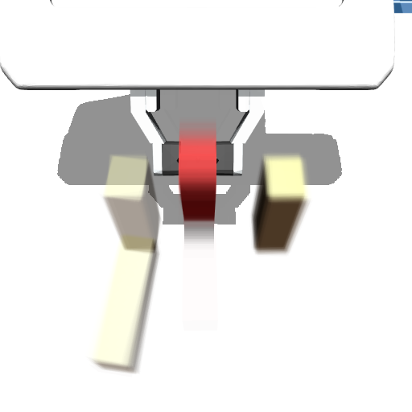
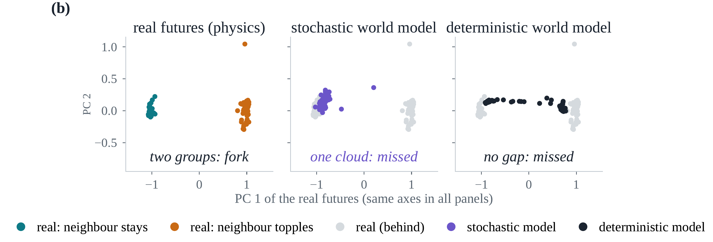

1 The question
Before each action chunk, a robot should ask: could my own small errors change what happens? Picking the middle block, the same command lifts it cleanly or tips a neighbour, depending on a few millimetres of perception and execution error.


The physics is deterministic: all uncertainty is the robot's own. A state is a fork if the outcome splits over futures sampled from that uncertainty.
2 The fork probe
Like the human intuitive physics engine: a few rough simulations over an uncertain scene; disagreement means precarious.

physics engine
or learned world model

- Samples the robot's measured errors: perception 2.5 mm, execution about 3 mm.
- Flags the chunk if the 64 endings are bimodal, not merely different.
- No task labels, no failure data, no thresholds fit to labels.
3 With a physics engine, it works
on unseen layouts, from one camera image
(test set C, 156 states; 95% CI 77–94%)
Sampling perception error matters: it is as large as execution error. This is the bar a learned world model must reach.
4 Learned world models miss the branch
Replace the engine with a world model predicting in DINOv2 feature space. Both models below predict 3–4× better than a no-motion baseline.

Right amount, wrong shape. The stochastic model's spread matches reality (0.98×), but only 15% lies along the branch (real: 57%), and it is barely larger on forks than on safe states (1.3× vs 4.8×). Five more generative variants catch at most 3%.
5 What closes the gap
Uncertain starts, deterministic dynamics, as in the intuitive physics engine: perturb the start, roll it out without noise. Oversample rare branches: find each training scene's rare branch with the same split test, no labels.
False alarms 7–11%. A generative model given the same uncertain starts still catches 0%: noise in the dynamics erases the forks.
6 Takeaways
Limitations: simulation, one three-block task; the ground truth uses the same error model the probe samples; single-seed, small world models.